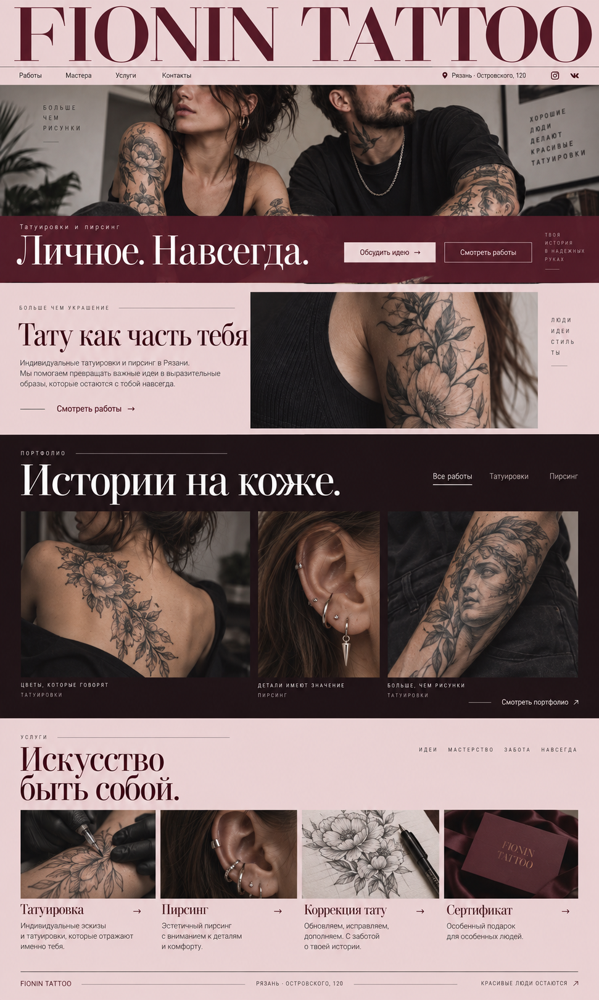
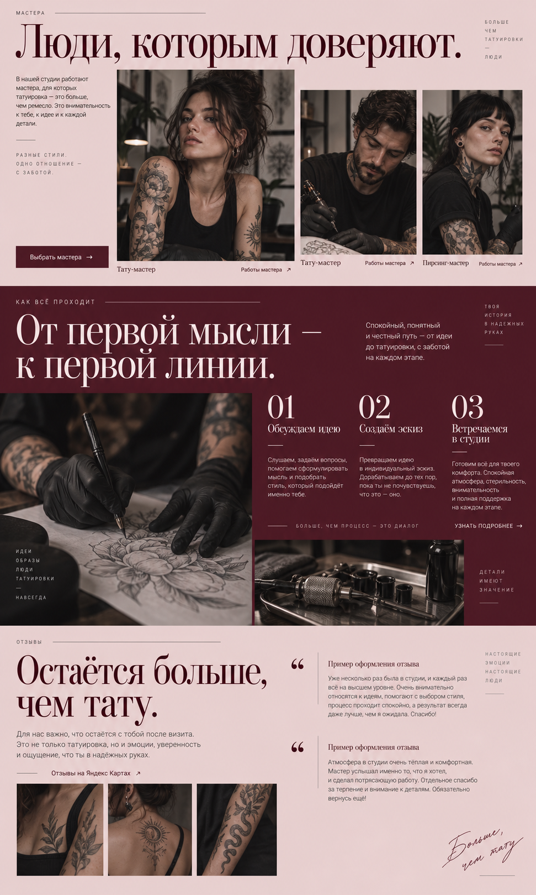
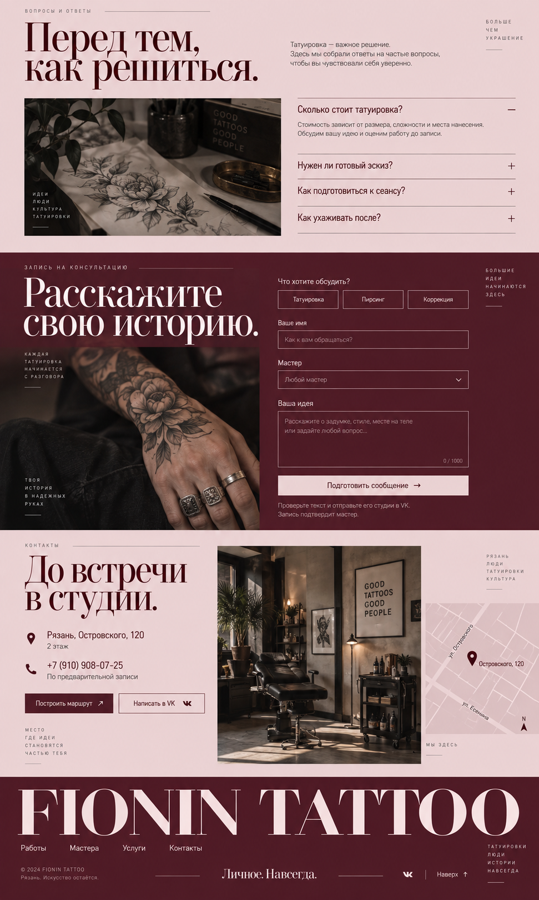

Татуировка→
Индивидуальные эскизы и татуировки, которые отражают именно тебя.

Индивидуальные татуировки и пирсинг в Рязани.
Мы помогаем превращать важные идеи в выразительные
образы, которые остаются с тобой навсегда.
Люди
идеи
стиль
ты
Портфолио
Работы студии · Яндекс Карты 6 работ
Вся галерея ↗Услуги
Идеи. Мастерство. Забота. Навсегда.

Индивидуальные эскизы и татуировки, которые отражают именно тебя.
Эстетичный пирсинг с вниманием к деталям и комфорту.
Обновляем, исправляем, дополняем. С заботой о твоей истории.
Особенный подарок для особенных людей. Условия — при оформлении.
Мастера
Татуировка — это больше, чем ремесло. Это внимательность к тебе, к идее и к каждой детали.
Разные стили.
Одно отношение —
с заботой.

На фото — образы из дизайн-концепции. Настоящие мастера и их работы — в сообществе студии.
Мастера Fionin Tattoo ↗Как всё происходит
Спокойный, понятный путь — от идеи до татуировки, с заботой на каждом этапе.
Твоя
история
в надёжных
руках
Слушаем, задаём вопросы, помогаем сформулировать мысль и подобрать стиль, который подойдёт именно тебе.
Обсуждаем композицию и детали, согласуем стоимость и подходящее время.
Воплощаем идею, рассказываем об уходе и остаёмся на связи после сеанса.
Больше, чем процесс — это диалог
Начать разговор →Отзывы
Для нас важно, что остаётся с тобой после визита.
Твоя история, уверенность и ощущение, что ты в надёжных руках.


Роман помог подобрать украшения и доработать эскиз. В отзыве особенно отмечены внимательное общение и уютная студия.
Перед первой татуировкой мастер объяснил этапы, уход и заживление. Помог определиться с рисунком и ответил на вопросы.
Больше,
чем тату.
Вопросы и ответы
Татуировка — важное решение.
Здесь мы собрали ответы на частые вопросы,
чтобы ты чувствовал себя увереннее.
Больше
чем
украшение

Цена зависит от размера, сложности рисунка, места нанесения и объёма работы. Пришлите идею, примерный размер и референсы — мастер оценит стоимость до записи.
Нет. Достаточно описать идею или показать несколько примеров того, что вам нравится. Мастер поможет определить композицию и детали.
Начнём с фотографии существующей работы. Возможность коррекции и подходящий рисунок зависят от её размера, цвета и состояния — это оценит мастер.
Заранее обсудите с мастером место нанесения, длительность и подготовку. О любых обстоятельствах, которые могут повлиять на процедуру, сообщите до записи.
Мастер объяснит уход после вашей процедуры. Следуйте выданным рекомендациям, а если что-то вызывает вопросы — свяжитесь со студией.
Напишите в тот же диалог, где договаривались о сеансе, или позвоните в студию. Сообщите о переносе заранее, чтобы подобрать новое время.
Запись на консультацию
Большие
идеи
начинаются
здесь
Контакты
Рязань, Островского, 1202 этаж · остановка «Лицей № 7»
+7 (910) 908-07-25Ежедневно 10:00–20:00
По предварительной записи
Место,
где идея
становится
частью тебя
Fionin Tattoo
Детали
О записи и данных
Форма готовит текст сообщения прямо в вашем браузере. Имя и описание идеи не отправляются на сервер сайта и не сохраняются после перезагрузки.
Чтобы связаться со студией, скопируйте текст, откройте VK и отправьте его самостоятельно. Запись подтверждается только в разговоре с мастером.
При открытии внешних ссылок действуют правила соответствующего сервиса.
О фотографиях
Фотографии в первом экране, блоке о студии, услугах, мастерах, процессе, FAQ, записи и контактах — иллюстрации выбранной дизайн-концепции, созданные с помощью ИИ. Портреты не изображают реальных сотрудников, интерьер — художественный образ.
В разделе «Портфолио» — реальные фотографии из галереи и отзывов Fionin Tattoo на Яндекс Картах. Они представлены без изменения самих работ.
Фото из галереи Fionin Tattoo на Яндекс Картах ↗
Проверьте перед отправкой
Скопируйте текст и отправьте его в сообщения сообщества студии. Мастер ответит и подтвердит запись.